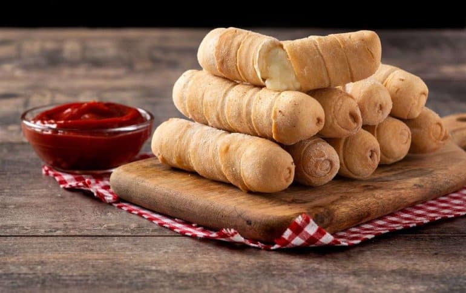

Receta de tequeños
Los tequeños son un aperitivo típico de Venezuelas. Son bastones de queso envueltos en una masa de harina, que se fríen hasta quedar doraditos y crujientes por fuera, mientras el queso queda derretido por dentro.

Receta
Ingredientes
- 500 g de harina de trigo
- 1 cucharadita de sal
- 1 cucharadita de azúcar
- 1 cucharadita de polvo de hornear (opcional, para una masa más ligera)
- 80 g de mantequilla fría, en cubos
- 1 huevo
- 400/500 g de queso blanco semiduro
Preparación
- Mezcla la harina, la sal, el azúcar y el polvo de hornear.
- Agrega la mantequilla y desmenúzala con las manos hasta obtener una textura arenosa.
- Incorpora el huevo y añade el agua poco a poco hasta formar una masa suave y elástica.
- Amasa durante 8–10 minutos. Cubre la masa y déjala reposar 30 minutos.
- Estira la masa hasta dejarla de unos 2–3 mm de grosor.
- Corta tiras de aproximadamente 2 cm de ancho.
- Envuelve cada bastón de queso con una tira de masa, superponiendo ligeramente cada vuelta para que el queso no se salga. Sella bien los extremos.
- Fríe en aceite a 170–180 °C hasta que estén dorados (3–5 minutos).
- Retíralos y colócalos sobre papel absorbente.